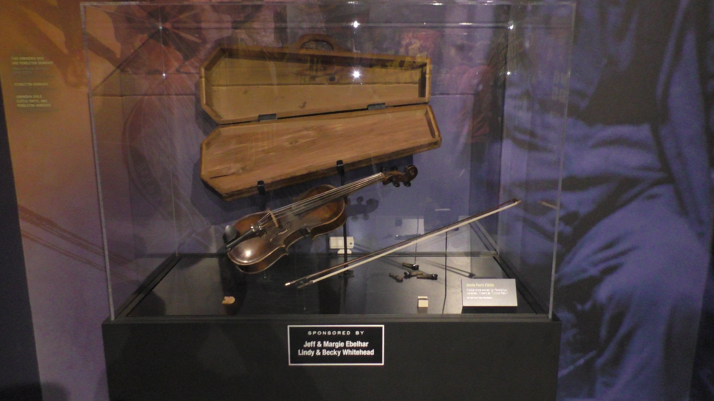

Sources
How we got here
 Like any artist, Bill Monroe and others were influenced by everything around them, and each element informed their music. In this exciting exhibit, discover the creative sources that shaped bluegrass music, including gospel, jazz, and blues.
Like any artist, Bill Monroe and others were influenced by everything around them, and each element informed their music. In this exciting exhibit, discover the creative sources that shaped bluegrass music, including gospel, jazz, and blues.
James Pendleton Vandiver (1869–1932) was a Kentucky fiddler, born there shortly after the American Civil War. He was uncle to bluegrass musician Bill Monroe, who immortalized him in a song, "Uncle Pen". Monroe used to hear his uncle playing fiddle on the hilltop where he lived, while Monroe put away his mules at night. He later said that Vandiver was "the fellow that I learned how to play from." Vandiver played fiddle at local square dances and social events, and his nephew backed him up, playing mandolin.
 Peter Seeger (May 3, 1919 – January 27, 2014) was an American folk singer and social activist. A fixture on nationwide radio in the 1940s, Seeger also had a string of hit records during the early 1950s as a member of the Weavers, most notably their recording of Lead Belly's "Goodnight, Irene", which topped the charts for 13 weeks in 1950. Members of the Weavers were blacklisted during the McCarthy Era. In the 1960s, Seeger re-emerged on the public scene as a prominent singer of protest music in support of international disarmament, civil rights, counterculture, workers rights, and environmental causes.
Peter Seeger (May 3, 1919 – January 27, 2014) was an American folk singer and social activist. A fixture on nationwide radio in the 1940s, Seeger also had a string of hit records during the early 1950s as a member of the Weavers, most notably their recording of Lead Belly's "Goodnight, Irene", which topped the charts for 13 weeks in 1950. Members of the Weavers were blacklisted during the McCarthy Era. In the 1960s, Seeger re-emerged on the public scene as a prominent singer of protest music in support of international disarmament, civil rights, counterculture, workers rights, and environmental causes.
Next Exhibit